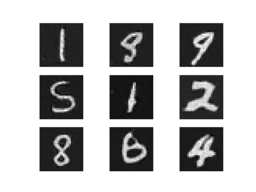

使用 PyTorch C++前端 ¶
创建时间：2025年4月1日 | 最后更新时间：2025年4月1日 | 最后验证时间：2024年11月5日
PyTorch C++前端是 PyTorch 机器学习框架的纯 C++接口。虽然 PyTorch 的主要接口是 Python，但这个 Python API 位于一个庞大的 C++代码库之上，提供了基础数据结构和功能，如张量和自动微分。C++前端提供了一个纯 C++11 API，它通过工具扩展了底层 C++代码库，这些工具是机器学习训练和推理所需的。这包括用于神经网络建模的内置常用组件；一个 API 来扩展此组件集以添加自定义模块；一个包含流行优化算法（如随机梯度下降）的库；一个并行数据加载器，具有定义和加载数据集的 API；序列化例程等等。
本教程将带您从头到尾了解如何使用 C++前端训练模型。具体来说，我们将训练一个 DCGAN——一种生成模型——以生成 MNIST 数字的图像。虽然从概念上讲这是一个简单的例子，但它应该足以让您对 PyTorch C++前端有一个快速的了解，并激发您训练更复杂模型的兴趣。我们将首先谈谈为什么您会想使用 C++前端，然后直接进入定义和训练我们的模型。
提示
观看 2018 年 CppCon 的闪电演讲 ，快速（且幽默）地了解 C++前端。
提示
本笔记全面概述了 C++前端组件和设计理念。
提示
PyTorch C++生态系统的文档可在以下位置获取
https://pytorch.org/cppdocs。在那里您可以找到高级描述以及 API 级别文档。
动机 ¶
在我们开始激动人心的 GANs 和 MNIST 数字之旅之前，让我们退一步，讨论一下为什么您想使用 C++ 前端而不是 Python 前端。我们（PyTorch 团队）创建了 C++ 前端，以便在 Python 无法使用或根本不是正确工具的环境中开展研究。这样的环境包括：
低延迟系统 ：您可能想在具有高帧率、低延迟要求的纯 C++ 游戏引擎中进行强化学习研究。使用纯 C++ 库更适合这样的环境，而不是 Python 库。由于 Python 解释器的速度较慢，Python 可能完全不适用。
高度多线程环境 ：由于全局解释器锁（GIL），Python 无法同时运行多个系统线程。多进程是一个替代方案，但可扩展性较差，并且存在重大缺陷。C++ 没有这样的限制，线程易于使用和创建。需要大量并行化的模型，如用于 深度 神经进化，可以从这受益。现有的 C++代码库 ：您可能拥有一个现有的 C++应用程序，它可能用于在后台服务器中提供网页服务，或者在照片编辑软件中渲染 3D 图形，并且希望将机器学习方法集成到您的系统中。C++前端允许您保持使用 C++，同时避免在 Python 和 C++之间绑定和转换的麻烦，同时保留传统 PyTorch（Python）体验的大部分灵活性和直观性。
C++前端并非旨在与 Python 前端竞争。它的目的是补充它。我们知道研究人员和工程师都喜欢 PyTorch 的简单性、灵活性和直观的 API。我们的目标是确保您可以在所有可能的环境中利用这些核心设计原则，包括上述情况。如果这些情况中的任何一个很好地描述了您的用例，或者如果您只是感兴趣或好奇，请跟随我们，在接下来的段落中我们将详细探讨 C++前端。
提示
C++前端试图提供一个尽可能接近 Python 前端的 API。如果你熟悉 Python 前端，并且曾经问过自己“我如何在 C++前端做 X？”，那么就按照你在 Python 中编写代码的方式编写代码，通常情况下，C++中与 Python 中相同的函数和方法都会可用（只需记得将点替换为双冒号即可）。
编写基本应用程序 ¶
让我们从编写一个最小的 C++应用程序开始，以验证我们对设置和构建环境的理解是否一致。首先，你需要获取一份 LibTorch 发行版的副本——这是我们预构建的 zip 存档，其中包含了使用所有相关头文件、库和 CMake 构建文件所需的全部内容。
打包了使用所有相关头文件、库和 CMake 构建文件所需的全部内容。
C++前端。LibTorch 发行版可在以下网站下载：PyTorch 网站
PyTorch 网站支持 Linux、MacOS 和 Windows。本教程将假设使用基本的 Ubuntu Linux 环境，但您也可以在 MacOS 或 Windows 上跟随操作。
提示
关于安装 PyTorch 的 C++发行版的说明详细描述了以下步骤。
提示
在 Windows 上，调试和发布版本不兼容 ABI。如果您计划以调试模式构建项目，请尝试 LibTorch 的调试版本。同时，请确保在 cmake --build . 中指定正确的配置。
以下行。
第一步是下载 LibTorch 发行版，本地通过从 PyTorch 网站获取的链接进行。对于标准的 Ubuntu Linux 环境，这意味着需要运行：
# If you need e.g. CUDA 9.0 support, please replace "cpu" with "cu90" in the URL below.
wget https://download.pytorch.org/libtorch/nightly/cpu/libtorch-shared-with-deps-latest.zip
unzip libtorch-shared-with-deps-latest.zip
接下来，让我们编写一个名为 dcgan.cpp 的小型 C++ 文件，该文件包含
torch/torch.h，目前仅简单地打印一个三行三列的单位矩阵：
#include <torch/torch.h>
#include <iostream>
int main() {
torch::Tensor tensor = torch::eye(3);
std::cout << tensor << std::endl;
}
为了构建这个小型应用程序以及稍后我们的完整训练脚本，我们将使用这个 CMakeLists.txt 文件：
cmake_minimum_required(VERSION 3.0 FATAL_ERROR)
project(dcgan)
find_package(Torch REQUIRED)
add_executable(dcgan dcgan.cpp)
target_link_libraries(dcgan "${TORCH_LIBRARIES}")
set_property(TARGET dcgan PROPERTY CXX_STANDARD 14)
备注
虽然 CMake 是 LibTorch 推荐的构建系统，但它并非强制要求。您也可以使用 Visual Studio 项目文件、QMake、普通 Makefile 或任何您感到舒适的构建环境。然而，我们并不提供对此类环境的直接支持。
请注意上述 CMake 文件中的第 4 行：find_package(Torch REQUIRED)。这指示 CMake 查找 LibTorch 库的构建配置。为了使 CMake 知道 在哪里 找到这些文件，我们必须设置
CMAKE_PREFIX_PATH 当调用 cmake 时。在我们这样做之前，让我们先确定我们的 dcgan 应用程序的以下目录结构：
dcgan/
CMakeLists.txt
dcgan.cpp
此外，我将把解压后的 LibTorch 分发路径称为
/path/to/libtorch. 注意这 必须是一个绝对路径 . 特别地，将 CMAKE_PREFIX_PATH 设置为类似 ../../libtorch 的内容会以意想不到的方式崩溃。相反，写入 $PWD/../../libtorch 以获取相应的绝对路径。现在，我们已经准备好构建我们的应用程序：
将会以意想不到的方式崩溃。相反，写入 $PWD/../../libtorch 以获取相应的绝对路径。现在，我们已经准备好构建我们的应用程序：
root@fa350df05ecf:/home# mkdir build
root@fa350df05ecf:/home# cd build
root@fa350df05ecf:/home/build# cmake -DCMAKE_PREFIX_PATH=/path/to/libtorch ..
-- The C compiler identification is GNU 5.4.0
-- The CXX compiler identification is GNU 5.4.0
-- Check for working C compiler: /usr/bin/cc
-- Check for working C compiler: /usr/bin/cc -- works
-- Detecting C compiler ABI info
-- Detecting C compiler ABI info - done
-- Detecting C compile features
-- Detecting C compile features - done
-- Check for working CXX compiler: /usr/bin/c++
-- Check for working CXX compiler: /usr/bin/c++ -- works
-- Detecting CXX compiler ABI info
-- Detecting CXX compiler ABI info - done
-- Detecting CXX compile features
-- Detecting CXX compile features - done
-- Looking for pthread.h
-- Looking for pthread.h - found
-- Looking for pthread_create
-- Looking for pthread_create - not found
-- Looking for pthread_create in pthreads
-- Looking for pthread_create in pthreads - not found
-- Looking for pthread_create in pthread
-- Looking for pthread_create in pthread - found
-- Found Threads: TRUE
-- Found torch: /path/to/libtorch/lib/libtorch.so
-- Configuring done
-- Generating done
-- Build files have been written to: /home/build
root@fa350df05ecf:/home/build# cmake --build . --config Release
Scanning dependencies of target dcgan
[ 50%] Building CXX object CMakeFiles/dcgan.dir/dcgan.cpp.o
[100%] Linking CXX executable dcgan
[100%] Built target dcgan
在这里，我们首先在 build 文件夹中创建了 dcgan 目录，进入此文件夹，运行 cmake 命令以生成必要的构建（Make）文件，最后通过运行 cmake
--build . --config Release 成功编译了项目。我们现在可以执行我们的最小二进制文件，并完成本节关于基本项目配置的说明：
root@fa350df05ecf:/home/build# ./dcgan
1 0 0
0 1 0
0 0 1
[ Variable[CPUFloatType]{3,3} ]
看起来像是一个单位矩阵！
定义神经网络模型 ¶
现在我们已经配置好了基本环境，我们可以深入到这个教程更有趣的部分。首先，我们将讨论如何在 C++前端中定义和交互模块。我们将从基本的、小规模的示例模块开始，然后使用 C++前端提供的丰富内置模块库实现一个完整的 GAN。
模块 API 基础 ¶
根据 Python 接口，基于 C++前端的神经网络由可重用的构建块组成，称为模块 。存在一个基本模块
类，所有其他模块都从中派生。在 Python 中，此类是
torch.nn.Module 和在 C++中它是 torch::nn::Module。此外，还有一个
forward() 方法实现了该模块封装的算法，一个模块通常包含以下三种子对象之一：参数、缓冲区和子模块。
参数和缓冲区以张量的形式存储状态。参数记录
梯度，而缓冲区则不记录。参数通常是您神经网络的可训练权重。
示例包括用于批量归一化的均值和方差。为了重用特定的逻辑块和状态，
可以重复使用特定的逻辑块和状态，以便在神经网络中实现模块化。
PyTorch API 允许模块嵌套。嵌套模块被称为
子模块 。
参数、缓冲区和子模块必须显式注册。注册后，可以使用如 parameters() 或 buffers() 这样的方法来检索整个（嵌套）模块层次结构中的所有参数容器。同样，如 to(...) 这样的方法，例如 to(torch::kCUDA) 将所有参数和缓冲区从 CPU 移动到 CUDA 内存，也作用于整个模块层次结构。
定义模块和注册参数 ¶
将这些话转化为代码，让我们考虑这个用 Python 接口编写的简单模块：
import torch
class Net(torch.nn.Module):
def __init__(self, N, M):
super(Net, self).__init__()
self.W = torch.nn.Parameter(torch.randn(N, M))
self.b = torch.nn.Parameter(torch.randn(M))
def forward(self, input):
return torch.addmm(self.b, input, self.W)
在 C++ 中，它看起来像这样：
#include <torch/torch.h>
struct Net : torch::nn::Module {
Net(int64_t N, int64_t M) {
W = register_parameter("W", torch::randn({N, M}));
b = register_parameter("b", torch::randn(M));
}
torch::Tensor forward(torch::Tensor input) {
return torch::addmm(b, input, W);
}
torch::Tensor W, b;
};
就像在 Python 中一样，我们定义一个名为 Net 的类（为了简单起见，这里一个
struct 代替 class)，并从模块基类派生。在构造函数中，我们使用 torch::randn 创建张量，就像我们在 Python 中使用 torch.randn 一样。一个有趣的不同之处在于我们如何注册参数。在 Python 中，我们使用 torch.nn.Parameter 包装张量，而在 C++中，我们必须通过 register_parameter 方法传递张量。这样做的原因是 Python API 可以检测到属性类型为 torch.nn.Parameter，并自动注册此类张量。在 C++中，反射非常有限，因此提供了一个更传统（也更少魔法性）的方法。
class，而在 C++中我们必须通过
register_parameter 方法来传递张量。这样做的原因是 Python API 可以检测到属性类型为 torch.nn.Parameter，而在 C++中，反射非常有限，所以提供了一个更传统（也更少魔法性）的方法。
注册子模块和遍历模块层次结构 ¶
同样地，我们可以注册子模块。在 Python 中，当子模块被分配为模块的属性时，它们会自动检测和注册：
class Net(torch.nn.Module):
def __init__(self, N, M):
super(Net, self).__init__()
# Registered as a submodule behind the scenes
self.linear = torch.nn.Linear(N, M)
self.another_bias = torch.nn.Parameter(torch.rand(M))
def forward(self, input):
return self.linear(input) + self.another_bias
这允许，例如，使用 parameters() 方法递归地访问我们模块层次结构中的所有参数：
>>> net = Net(4, 5)
>>> print(list(net.parameters()))
[Parameter containing:
tensor([0.0808, 0.8613, 0.2017, 0.5206, 0.5353], requires_grad=True), Parameter containing:
tensor([[-0.3740, -0.0976, -0.4786, -0.4928],
[-0.1434, 0.4713, 0.1735, -0.3293],
[-0.3467, -0.3858, 0.1980, 0.1986],
[-0.1975, 0.4278, -0.1831, -0.2709],
[ 0.3730, 0.4307, 0.3236, -0.0629]], requires_grad=True), Parameter containing:
tensor([ 0.2038, 0.4638, -0.2023, 0.1230, -0.0516], requires_grad=True)]
在 C++中注册子模块，可以使用名字恰如其分的 register_module() 方法来注册一个模块，例如 torch::nn::Linear：
struct Net : torch::nn::Module {
Net(int64_t N, int64_t M)
: linear(register_module("linear", torch::nn::Linear(N, M))) {
another_bias = register_parameter("b", torch::randn(M));
}
torch::Tensor forward(torch::Tensor input) {
return linear(input) + another_bias;
}
torch::nn::Linear linear;
torch::Tensor another_bias;
};
提示
您可以在 torch::nn 命名空间文档中找到所有可用的内置模块的完整列表，例如
torch::nn::Linear、torch::nn::Dropout 或 torch::nn::Conv2d，详情请见此处 。
上述代码的一个细微之处在于，为什么在构造函数的初始化列表中创建了子模块，而参数是在构造函数体内部创建的。这有一个很好的原因，我们将在下面的 C++前端《em id=0>所有权模型 》部分中提到。然而，最终结果是，我们可以像在 Python 中一样递归地访问我们的模块树参数。调用 parameters() 返回一个
std::vector<torch::Tensor>，我们可以遍历它：
int main() {
Net net(4, 5);
for (const auto& p : net.parameters()) {
std::cout << p << std::endl;
}
}
这将打印：
root@fa350df05ecf:/home/build# ./dcgan
0.0345
1.4456
-0.6313
-0.3585
-0.4008
[ Variable[CPUFloatType]{5} ]
-0.1647 0.2891 0.0527 -0.0354
0.3084 0.2025 0.0343 0.1824
-0.4630 -0.2862 0.2500 -0.0420
0.3679 -0.1482 -0.0460 0.1967
0.2132 -0.1992 0.4257 0.0739
[ Variable[CPUFloatType]{5,4} ]
0.01 *
3.6861
-10.1166
-45.0333
7.9983
-20.0705
[ Variable[CPUFloatType]{5} ]
就像 Python 中有三个参数一样。要同时看到这些参数的名称，C++ API 提供了一个 named_parameters() 方法，它返回一个 OrderedDict，就像在 Python 中一样：
Net net(4, 5);
for (const auto& pair : net.named_parameters()) {
std::cout << pair.key() << ": " << pair.value() << std::endl;
}
我们可以再次执行以查看输出：
root@fa350df05ecf:/home/build# make && ./dcgan 11:13:48
Scanning dependencies of target dcgan
[ 50%] Building CXX object CMakeFiles/dcgan.dir/dcgan.cpp.o
[100%] Linking CXX executable dcgan
[100%] Built target dcgan
b: -0.1863
-0.8611
-0.1228
1.3269
0.9858
[ Variable[CPUFloatType]{5} ]
linear.weight: 0.0339 0.2484 0.2035 -0.2103
-0.0715 -0.2975 -0.4350 -0.1878
-0.3616 0.1050 -0.4982 0.0335
-0.1605 0.4963 0.4099 -0.2883
0.1818 -0.3447 -0.1501 -0.0215
[ Variable[CPUFloatType]{5,4} ]
linear.bias: -0.0250
0.0408
0.3756
-0.2149
-0.3636
[ Variable[CPUFloatType]{5} ]
备注
文档
对于 torch::nn::Module 包含了操作模块层次结构的所有方法列表。
以正向模式运行网络 ¶
要在 C++中执行网络，我们只需调用我们自己定义的 forward() 方法：
int main() {
Net net(4, 5);
std::cout << net.forward(torch::ones({2, 4})) << std::endl;
}
它会打印出类似的内容：
root@fa350df05ecf:/home/build# ./dcgan
0.8559 1.1572 2.1069 -0.1247 0.8060
0.8559 1.1572 2.1069 -0.1247 0.8060
[ Variable[CPUFloatType]{2,5} ]
模块所有权 ¶
到目前为止，我们已经知道如何在 C++中定义一个模块，注册参数，
注册子模块，通过方法如遍历模块层次结构
代码中的 parameters() 函数和最后运行模块的 forward() 方法。虽然 C++ API 中还有许多更多的方法、类和主题需要学习，但我将为您推荐 文档 以获取完整菜单。在我们这样做之前，让我简要介绍一下 C++前端为 torch::nn::Module 的子类提供的 所有权模型 。
对于这次讨论，所有权模型指的是模块的存储和传递方式——这决定了谁或什么拥有特定的模块实例。在 Python 中，对象总是动态分配（在堆上）并且具有引用语义。这非常容易操作且易于理解。实际上，在 Python 中，你可以很大程度上忘记对象在哪里以及它们是如何被引用的，而专注于完成任务。
C++作为一种底层语言，在这个领域提供了更多选择。这增加了复杂性，并且极大地影响了 C++前端的架构和用户体验。特别是对于 C++前端中的模块，我们有使用值语义或引用语义的选择。第一种情况是最简单的，如前所述的示例所示：模块对象在栈上分配，当传递给函数时，可以是复制、移动（使用 std::move）或者通过引用或指针获取：
最简单的情况，如前所述的示例所示：模块对象在栈上分配，当传递给函数时，可以是复制、移动（使用 std::move）或者通过引用或指针获取：
最简单的情况，如前所述的示例所示：模块对象在栈上分配，当传递给函数时，可以是复制、移动（使用 std::move）或者通过引用或指针获取：
最简单的情况，如前所述的示例所示：模块对象在栈上分配，当传递给函数时，可以是复制、移动（使用 std::move）或者通过引用或指针获取：
struct Net : torch::nn::Module { };
void a(Net net) { }
void b(Net& net) { }
void c(Net* net) { }
int main() {
Net net;
a(net);
a(std::move(net));
b(net);
c(&net);
}
对于第二种情况——引用语义——我们可以使用 std::shared_ptr。引用语义的优点是，就像在 Python 中一样，它减少了思考如何将模块传递给函数以及如何声明参数的认知负担（假设你在每个地方都使用 shared_ptr）。
struct Net : torch::nn::Module {};
void a(std::shared_ptr<Net> net) { }
int main() {
auto net = std::make_shared<Net>();
a(net);
}
在我们的经验中，来自动态语言的研究人员更倾向于引用语义而非值语义，尽管后者在 C++中更为“原生”。同时，值得注意的是 torch::nn::Module 的
设计，为了保持与 Python API 的易用性，依赖于
共享所有权。例如，考虑我们之前（此处已简化）对
Net 的定义：
struct Net : torch::nn::Module {
Net(int64_t N, int64_t M)
: linear(register_module("linear", torch::nn::Linear(N, M)))
{ }
torch::nn::Linear linear;
};
为了使用 线性 子模块，我们希望将其直接存储在我们的类中。
然而，我们还想让模块的基类了解并访问这个子模块。为此，它必须存储对这个子模块的引用。在这一点上，我们已经到达了需要共享拥有的需求。两者
都需要对这个子模块有访问权限。目前，我们已经到达了需要共享拥有的需求。两者
都需要对这个子模块有访问权限。目前，我们已经到达了需要共享拥有的需求。
torch::nn::Module 类和具体的 Net 类需要一个对
子模块。因此，基类将模块存储为
`shared_ptr，因此具体的类也必须如此。`
但是等等！我在上面的代码中看不到任何关于 shared_ptr 的提及！这是为什么？嗯，因为 std::shared_ptr<MyModule> 要打很多字。为了保持我们的研究人员高效，我们想出了一个巧妙的方案来隐藏对 shared_ptr 的提及——这通常是保留给值语义的福利——同时保留引用语义。要了解这是如何工作的，我们可以看看核心库中 torch::nn::Linear 模块的简化定义（完整定义在这里：here）：
struct LinearImpl : torch::nn::Module {
LinearImpl(int64_t in, int64_t out);
Tensor forward(const Tensor& input);
Tensor weight, bias;
};
TORCH_MODULE(Linear);
简要来说：该模块不是调用 Linear，而是调用 LinearImpl。一个宏，
Torch 模块定义了实际的 Linear 类。这个“生成”的类实际上是一个对 std::shared_ptr<LinearImpl> 的包装器。它是一个包装器而不是简单的 typedef，这样，在其他方面，构造函数仍然按预期工作，即您仍然可以编写 torch::nn::Linear(3, 4)
而不是 std::make_shared<LinearImpl>(3, 4) 。我们称由宏创建的类为模块 holder。就像（共享）指针一样，您可以使用箭头运算符（如 model->forward(...)）访问底层对象。
最终结果是类似于 Python API 的所有权模型
紧密。引用语义成为默认，但无需额外输入。
`std::shared_ptr` 或 `std::make_shared。对于我们的 `Net`，使用模块持有者 API 看起来像这样：
struct NetImpl : torch::nn::Module {};
TORCH_MODULE(Net);
void a(Net net) { }
int main() {
Net net;
a(net);
}
“这里有一个值得注意的微妙问题。”
`std::shared_ptr 是“空的”，即包含一个空指针。一个默认构造的 Linear 或 Net 是什么？嗯，这是一个棘手的选择。我们可以说它应该是一个空的（空）std::shared_ptr<LinearImpl>。然而，请记住`
Linear(3, 4) 与 std::make_shared<LinearImpl>(3, 4) 相同。这意味着如果我们决定将 Linear linear; 设置为空指针，那么将无法构造一个不接受任何构造参数的模块，或者将所有参数都设置为默认值。因此，在当前 API 中，默认构造的模块持有者（如 Linear()）将调用底层模块的默认构造函数（LinearImpl()）。如果底层模块没有默认构造函数，您将得到编译器错误。要构造空持有者，可以将 nullptr 传递给持有者的构造函数。
实际上，这意味着您可以使用子模块，要么像之前展示的那样，在 初始化列表 中注册和构造模块：
struct Net : torch::nn::Module {
Net(int64_t N, int64_t M)
: linear(register_module("linear", torch::nn::Linear(N, M)))
{ }
torch::nn::Linear linear;
};
或者您可以先使用空指针构造持有者，然后在构造函数中对其进行赋值（对于 Python 程序员来说可能更熟悉）：
struct Net : torch::nn::Module {
Net(int64_t N, int64_t M) {
linear = register_module("linear", torch::nn::Linear(N, M));
}
torch::nn::Linear linear{nullptr}; // construct an empty holder
};
总结来说：您应该使用哪种所有权模型——哪种语义？C++前端 API 最好地支持模块持有者的所有权模型。这种机制的唯一缺点是在模块声明下方多一行样板代码。但即便如此，最简单的模型仍然是 C++模块介绍中展示的值语义模型。对于小型简单的脚本，您可能也能应付。但迟早您会发现，出于技术原因，它并不总是得到支持。例如，序列化 API（torch::save 和 torch::load）仅支持模块持有者（或纯 shared_ptr）。因此，模块持有者 API 是推荐使用 C++前端定义模块的方式，本教程将使用此 API。
shared_ptr）。因此，模块持有者 API 是推荐使用 C++前端定义模块的方式，本教程将使用此 API。
定义 DCGAN 模块 ¶
我们现在已经具备了定义本篇博客中想要解决的机器学习任务所需的模块的必要背景和介绍。回顾一下：我们的任务是生成 MNIST 数据集的数字图像。我们希望使用生成对抗
使用（GAN）网络来解决这个任务。特别是，我们将使用一个 DCGAN 架构 ——这是最早和最简单的此类架构之一，但对于这个任务来说已经足够了。
提示
您可以在本教程中找到完整的源代码在此 。
仓库 。
什么是 GAN 和 aGAN?¶
GAN 由两个不同的神经网络模型组成：一个生成器和一个
判别器 。生成器接收来自噪声分布的样本，其目的是将每个噪声样本转换成与目标分布（在我们的案例中是 MNIST 数据集）相似的图像。反过来，判别器接收来自 MNIST 数据集的真实图像或来自
生成器的伪造图像。它被要求发出一个概率，判断图像有多真实（接近
1) 或伪造（更接近 0) 的特定图像。生成器生成的图像的真实性反馈用于训练生成器。对判别器对真实性的识别能力的反馈用于优化判别器。从理论上讲，生成器和判别器之间微妙的平衡使它们共同提高，导致生成器产生的图像与目标分布不可区分，欺骗了（那时）优秀的判别器眼睛，使其对真实和伪造图像的概率均为 0.5。对我们来说，最终结果是接收噪声作为输入并生成数字的逼真图像的机器。
生成器模块 ¶
我们首先定义生成器模块，它由一系列
转置二维卷积、批量归一化和 ReLU 激活单元组成。
我们明确地在模块之间以函数式方式传递输入（）
我们自己定义的模块的 forward() 方法：
struct DCGANGeneratorImpl : nn::Module {
DCGANGeneratorImpl(int kNoiseSize)
: conv1(nn::ConvTranspose2dOptions(kNoiseSize, 256, 4)
.bias(false)),
batch_norm1(256),
conv2(nn::ConvTranspose2dOptions(256, 128, 3)
.stride(2)
.padding(1)
.bias(false)),
batch_norm2(128),
conv3(nn::ConvTranspose2dOptions(128, 64, 4)
.stride(2)
.padding(1)
.bias(false)),
batch_norm3(64),
conv4(nn::ConvTranspose2dOptions(64, 1, 4)
.stride(2)
.padding(1)
.bias(false))
{
// register_module() is needed if we want to use the parameters() method later on
register_module("conv1", conv1);
register_module("conv2", conv2);
register_module("conv3", conv3);
register_module("conv4", conv4);
register_module("batch_norm1", batch_norm1);
register_module("batch_norm2", batch_norm2);
register_module("batch_norm3", batch_norm3);
}
torch::Tensor forward(torch::Tensor x) {
x = torch::relu(batch_norm1(conv1(x)));
x = torch::relu(batch_norm2(conv2(x)));
x = torch::relu(batch_norm3(conv3(x)));
x = torch::tanh(conv4(x));
return x;
}
nn::ConvTranspose2d conv1, conv2, conv3, conv4;
nn::BatchNorm2d batch_norm1, batch_norm2, batch_norm3;
};
TORCH_MODULE(DCGANGenerator);
DCGANGenerator generator(kNoiseSize);
现在，我们可以在 DCGANGenerator 上调用 forward()，将噪声样本映射到图像。
选择的特定模块，如 nn::ConvTranspose2d 和 nn::BatchNorm2d，遵循之前概述的结构。常量 kNoiseSize 决定了输入噪声向量的大小，并设置为 100。当然，超参数是通过梯度下降法找到的。
注意
在超参数的发现过程中，没有研究生受到伤害。他们定期食用 Soylent。
备注
简要说明选项是如何传递给内置模块（如 `Conv2d`）的
在 C++前端：每个模块都有一些必需的选项，比如 `BatchNorm2d` 的特征数量。如果您只需要配置必需的
选项数量，例如 `BatchNorm2d`。
选项，您可以直接将它们传递给模块的构造函数，例如
BatchNorm2d(128) 或 Dropout(0.5) 或 Conv2d(8, 4, 2)（输入通道数、输出通道数和卷积核大小）。如果您需要修改其他选项，这些选项通常是默认的，例如 bias
对于 Conv2d，您需要构建并传递一个 选项 对象。每个
C++前端模块都有一个与之关联的选项结构体，称为
模块选项 其中 模块 是模块的名称，例如
线性选项 对应 线性 。这就是我们对 Conv2d 做的事情
上述模块。
判别器模块 ¶
判别器同样是一个由卷积、批量归一化和激活组成的序列。然而，这里的卷积现在是常规卷积而不是转置卷积，我们使用带有 0.2 的 alpha 值的漏 ReLU 代替了普通的 ReLU。此外，最终的激活变为 Sigmoid，将值压缩到 0 到 1 之间。然后我们可以将这些压缩后的值解释为判别器分配给图像为真实的概率。
为了构建判别器，我们将尝试一种不同的方法：一个 Sequential 模块。与 Python 中的情况一样，PyTorch 在这里提供了两种模型定义的 API：一种是通过连续函数传递输入的功能性 API（例如生成器模块示例），另一种是更面向对象的 API，其中我们构建一个包含整个模型的子模块的 Sequential 模块。使用 Sequential，判别器将看起来像：
nn::Sequential discriminator(
// Layer 1
nn::Conv2d(
nn::Conv2dOptions(1, 64, 4).stride(2).padding(1).bias(false)),
nn::LeakyReLU(nn::LeakyReLUOptions().negative_slope(0.2)),
// Layer 2
nn::Conv2d(
nn::Conv2dOptions(64, 128, 4).stride(2).padding(1).bias(false)),
nn::BatchNorm2d(128),
nn::LeakyReLU(nn::LeakyReLUOptions().negative_slope(0.2)),
// Layer 3
nn::Conv2d(
nn::Conv2dOptions(128, 256, 4).stride(2).padding(1).bias(false)),
nn::BatchNorm2d(256),
nn::LeakyReLU(nn::LeakyReLUOptions().negative_slope(0.2)),
// Layer 4
nn::Conv2d(
nn::Conv2dOptions(256, 1, 3).stride(1).padding(0).bias(false)),
nn::Sigmoid());
提示
一个 顺序 模块简单地执行函数组合。第一个子模块的输出成为第二个子模块的输入，第三个子模块的输出成为第四个子模块的输入，依此类推。
加载数据 ¶
现在我们已经定义了生成器和判别器模型，我们需要一些可以用来训练这些模型的数据。与 Python 前端一样，C++前端也自带一个强大的并行数据加载器。这个数据加载器可以从数据集（您可以自己定义）中读取数据批次，并提供许多配置选项。
备注
虽然 Python 数据加载器使用多进程，但 C++数据加载器真正实现了多线程，并且不会启动任何新的进程。
数据加载器是 C++前端数据 API 的一部分，包含在
torch::data:: 命名空间中。此 API 由几个不同的组件组成：
数据加载器类，
定义数据集的 API，
定义转换的 API，这些转换可以应用于数据集，
定义采样器的 API，这些采样器生成用于索引数据集的索引，
现有数据集、转换和采样器的库。
对于这个教程，我们可以使用随 C++前端一起提供的 MNIST 数据集。为此，我们可以实例化一个 torch::data::datasets::MNIST，并应用两个转换：首先，我们将图像归一化到 -1 到 +1 的范围内（从原始范围 0 到 1）。其次，我们应用 Stackcollation，它将一个批次的张量堆叠成一个沿第一个维度排列的单个张量：
auto dataset = torch::data::datasets::MNIST("./mnist")
.map(torch::data::transforms::Normalize<>(0.5, 0.5))
.map(torch::data::transforms::Stack<>());
注意，MNIST 数据集应该位于从您执行训练二进制文件的相对路径的 ./mnist 目录中。您可以使用 此脚本 来下载 MNIST 数据集。
脚本
以下载 MNIST 数据集。
接下来，我们创建一个数据加载器并将此数据集传递给它。为了创建一个新的数据加载器，我们使用 torch::data::make_data_loader，它返回一个
std::unique_ptr 的正确类型（这取决于数据集的类型、采样器的类型以及一些其他实现细节）：
auto data_loader = torch::data::make_data_loader(std::move(dataset));
数据加载器确实提供了很多选项。您可以检查完整的选项集
这里 。例如，为了加快数据加载，我们可以增加工作进程的数量。默认数量为零，这意味着将使用主线程。如果我们将 workers 设置为 2，将启动两个线程以并发加载数据。我们还应该将批处理大小从其默认的 1 增加。
将其改为更合理的值，例如 64（kBatchSize 的值）。因此，让我们创建一个 DataLoaderOptions 对象并设置适当的属性：
auto data_loader = torch::data::make_data_loader(
std::move(dataset),
torch::data::DataLoaderOptions().batch_size(kBatchSize).workers(2));
现在，我们可以编写一个循环来加载数据批次，目前我们只将它们打印到控制台：
for (torch::data::Example<>& batch : *data_loader) {
std::cout << "Batch size: " << batch.data.size(0) << " | Labels: ";
for (int64_t i = 0; i < batch.data.size(0); ++i) {
std::cout << batch.target[i].item<int64_t>() << " ";
}
std::cout << std::endl;
}
在这种情况下，数据加载器返回的类型是 torch::data::Example。这是一个简单的结构体，包含一个 data 字段用于数据和一个 target 字段用于标签。
因为我们在之前应用了 Stack 合并，所以数据加载器只返回一个这样的示例。如果我们没有应用合并，数据加载器将产生 std::vector<torch::data::Example<>>
取而代之，每个批次包含一个元素。
如果你重新构建并运行此代码，你应该看到类似以下内容：
root@fa350df05ecf:/home/build# make
Scanning dependencies of target dcgan
[ 50%] Building CXX object CMakeFiles/dcgan.dir/dcgan.cpp.o
[100%] Linking CXX executable dcgan
[100%] Built target dcgan
root@fa350df05ecf:/home/build# make
[100%] Built target dcgan
root@fa350df05ecf:/home/build# ./dcgan
Batch size: 64 | Labels: 5 2 6 7 2 1 6 7 0 1 6 2 3 6 9 1 8 4 0 6 5 3 3 0 4 6 6 6 4 0 8 6 0 6 9 2 4 0 2 8 6 3 3 2 9 2 0 1 4 2 3 4 8 2 9 9 3 5 8 0 0 7 9 9
Batch size: 64 | Labels: 2 2 4 7 1 2 8 8 6 9 0 2 2 9 3 6 1 3 8 0 4 4 8 8 8 9 2 6 4 7 1 5 0 9 7 5 4 3 5 4 1 2 8 0 7 1 9 6 1 6 5 3 4 4 1 2 3 2 3 5 0 1 6 2
Batch size: 64 | Labels: 4 5 4 2 1 4 8 3 8 3 6 1 5 4 3 6 2 2 5 1 3 1 5 0 8 2 1 5 3 2 4 4 5 9 7 2 8 9 2 0 6 7 4 3 8 3 5 8 8 3 0 5 8 0 8 7 8 5 5 6 1 7 8 0
Batch size: 64 | Labels: 3 3 7 1 4 1 6 1 0 3 6 4 0 2 5 4 0 4 2 8 1 9 6 5 1 6 3 2 8 9 2 3 8 7 4 5 9 6 0 8 3 0 0 6 4 8 2 5 4 1 8 3 7 8 0 0 8 9 6 7 2 1 4 7
Batch size: 64 | Labels: 3 0 5 5 9 8 3 9 8 9 5 9 5 0 4 1 2 7 7 2 0 0 5 4 8 7 7 6 1 0 7 9 3 0 6 3 2 6 2 7 6 3 3 4 0 5 8 8 9 1 9 2 1 9 4 4 9 2 4 6 2 9 4 0
Batch size: 64 | Labels: 9 6 7 5 3 5 9 0 8 6 6 7 8 2 1 9 8 8 1 1 8 2 0 7 1 4 1 6 7 5 1 7 7 4 0 3 2 9 0 6 6 3 4 4 8 1 2 8 6 9 2 0 3 1 2 8 5 6 4 8 5 8 6 2
Batch size: 64 | Labels: 9 3 0 3 6 5 1 8 6 0 1 9 9 1 6 1 7 7 4 4 4 7 8 8 6 7 8 2 6 0 4 6 8 2 5 3 9 8 4 0 9 9 3 7 0 5 8 2 4 5 6 2 8 2 5 3 7 1 9 1 8 2 2 7
Batch size: 64 | Labels: 9 1 9 2 7 2 6 0 8 6 8 7 7 4 8 6 1 1 6 8 5 7 9 1 3 2 0 5 1 7 3 1 6 1 0 8 6 0 8 1 0 5 4 9 3 8 5 8 4 8 0 1 2 6 2 4 2 7 7 3 7 4 5 3
Batch size: 64 | Labels: 8 8 3 1 8 6 4 2 9 5 8 0 2 8 6 6 7 0 9 8 3 8 7 1 6 6 2 7 7 4 5 5 2 1 7 9 5 4 9 1 0 3 1 9 3 9 8 8 5 3 7 5 3 6 8 9 4 2 0 1 2 5 4 7
Batch size: 64 | Labels: 9 2 7 0 8 4 4 2 7 5 0 0 6 2 0 5 9 5 9 8 8 9 3 5 7 5 4 7 3 0 5 7 6 5 7 1 6 2 8 7 6 3 2 6 5 6 1 2 7 7 0 0 5 9 0 0 9 1 7 8 3 2 9 4
Batch size: 64 | Labels: 7 6 5 7 7 5 2 2 4 9 9 4 8 7 4 8 9 4 5 7 1 2 6 9 8 5 1 2 3 6 7 8 1 1 3 9 8 7 9 5 0 8 5 1 8 7 2 6 5 1 2 0 9 7 4 0 9 0 4 6 0 0 8 6
...
这意味着我们成功从 MNIST 数据集中加载数据。
编写训练循环 ¶
现在让我们完成示例的算法部分，并实现生成器和判别器之间微妙的舞蹈。首先，我们将创建两个优化器，一个用于生成器，一个用于判别器。我们使用的优化器实现了 Adam 算法：
torch::optim::Adam generator_optimizer(
generator->parameters(), torch::optim::AdamOptions(2e-4).betas(std::make_tuple(0.5, 0.5)));
torch::optim::Adam discriminator_optimizer(
discriminator->parameters(), torch::optim::AdamOptions(5e-4).betas(std::make_tuple(0.5, 0.5)));
备注
到本文写作时，C++前端提供了实现 Adagrad、Adam、LBFGS、RMSprop 和 SGD 的优化器。《 文档 》有最新的列表。
接下来，我们需要更新我们的训练循环。我们将添加一个外循环来在每个 epoch 中耗尽数据加载器，然后编写 GAN 训练代码：
for (int64_t epoch = 1; epoch <= kNumberOfEpochs; ++epoch) {
int64_t batch_index = 0;
for (torch::data::Example<>& batch : *data_loader) {
// Train discriminator with real images.
discriminator->zero_grad();
torch::Tensor real_images = batch.data;
torch::Tensor real_labels = torch::empty(batch.data.size(0)).uniform_(0.8, 1.0);
torch::Tensor real_output = discriminator->forward(real_images).reshape(real_labels.sizes());
torch::Tensor d_loss_real = torch::binary_cross_entropy(real_output, real_labels);
d_loss_real.backward();
// Train discriminator with fake images.
torch::Tensor noise = torch::randn({batch.data.size(0), kNoiseSize, 1, 1});
torch::Tensor fake_images = generator->forward(noise);
torch::Tensor fake_labels = torch::zeros(batch.data.size(0));
torch::Tensor fake_output = discriminator->forward(fake_images.detach()).reshape(fake_labels.sizes());
torch::Tensor d_loss_fake = torch::binary_cross_entropy(fake_output, fake_labels);
d_loss_fake.backward();
torch::Tensor d_loss = d_loss_real + d_loss_fake;
discriminator_optimizer.step();
// Train generator.
generator->zero_grad();
fake_labels.fill_(1);
fake_output = discriminator->forward(fake_images).reshape(fake_labels.sizes());
torch::Tensor g_loss = torch::binary_cross_entropy(fake_output, fake_labels);
g_loss.backward();
generator_optimizer.step();
std::printf(
"\r[%2ld/%2ld][%3ld/%3ld] D_loss: %.4f | G_loss: %.4f",
epoch,
kNumberOfEpochs,
++batch_index,
batches_per_epoch,
d_loss.item<float>(),
g_loss.item<float>());
}
}
在上面，我们首先在真实图像上评估判别器，对于这些图像，它应该赋予一个高概率。为此，我们使用
torch::empty(batch.data.size(0)).uniform_(0.8, 1.0) 作为目标概率。
备注
备注
我们选择在 0.8 和 1.0 之间均匀分布的随机值，而不是在所有地方都使用 1.0，以提高判别器训练的鲁棒性。这个技巧被称为标签平滑 。
在评估判别器之前，我们将其参数的梯度置零。计算损失后，通过调用 d_loss.backward() 来反向传播网络，以计算新的梯度。我们对假图像重复这一过程。我们不是使用数据集中的图像，而是通过向生成器输入一批随机噪声来让生成器创建假图像。然后我们将这些假图像传递给判别器。这一次，我们希望判别器输出低概率，理想情况下为零。一旦我们计算了真实图像批次和假图像批次的判别器损失，我们就可以通过一步来推进判别器的优化器，以更新其参数。
为了训练生成器，我们首先再次将其梯度置零，然后重新评估在伪造图像上的判别器。然而，这一次我们希望判别器分配的概率非常接近于 1，这表明生成器可以生成能够欺骗判别器认为它们实际上是真实图像（来自数据集）的图像。为此，我们将伪造标签张量填充为全 1。我们最后也更新生成器优化器的参数。
tensor with all ones. We finally step the generator’s optimizer to also update
its parameters.
我们现在应该准备好在 CPU 上训练我们的模型了。我们还没有任何代码来捕获状态或采样输出，但我们将很快添加这些功能。现在，让我们先观察一下我们的模型正在做什么 ——我们将在稍后根据生成的图像来验证这是否有意义。重新构建和运行应该会打印出类似以下内容：
root@3c0711f20896:/home/build# make && ./dcgan
Scanning dependencies of target dcgan
[ 50%] Building CXX object CMakeFiles/dcgan.dir/dcgan.cpp.o
[100%] Linking CXX executable dcgan
[100%] Built target dcga
[ 1/10][100/938] D_loss: 0.6876 | G_loss: 4.1304
[ 1/10][200/938] D_loss: 0.3776 | G_loss: 4.3101
[ 1/10][300/938] D_loss: 0.3652 | G_loss: 4.6626
[ 1/10][400/938] D_loss: 0.8057 | G_loss: 2.2795
[ 1/10][500/938] D_loss: 0.3531 | G_loss: 4.4452
[ 1/10][600/938] D_loss: 0.3501 | G_loss: 5.0811
[ 1/10][700/938] D_loss: 0.3581 | G_loss: 4.5623
[ 1/10][800/938] D_loss: 0.6423 | G_loss: 1.7385
[ 1/10][900/938] D_loss: 0.3592 | G_loss: 4.7333
[ 2/10][100/938] D_loss: 0.4660 | G_loss: 2.5242
[ 2/10][200/938] D_loss: 0.6364 | G_loss: 2.0886
[ 2/10][300/938] D_loss: 0.3717 | G_loss: 3.8103
[ 2/10][400/938] D_loss: 1.0201 | G_loss: 1.3544
[ 2/10][500/938] D_loss: 0.4522 | G_loss: 2.6545
...
移动到 GPU¶
虽然我们当前的脚本在 CPU 上运行得很好，但我们都知道卷积在 GPU 上要快得多。让我们快速讨论如何将我们的训练移动到 GPU 上。为此，我们需要做两件事：将 GPU 设备规范传递给我们自己分配的张量，并显式地将其他张量复制到 GPU 上，通过 C++前端所有张量和模块的 to() 方法。实现这两者的最简单方法是创建一个 torch::Device 实例
在我们的训练脚本的最顶层，然后将该设备传递给张量
工厂函数，如 torch::zeros 以及 to() 方法。我们可以从使用 CPU 设备开始这样做：
// Place this somewhere at the top of your training script.
torch::Device device(torch::kCPU);
新的张量分配如
torch::Tensor fake_labels = torch::zeros(batch.data.size(0));
应该更新为将 设备 作为最后一个参数：
torch::Tensor fake_labels = torch::zeros(batch.data.size(0), device);
对于创建不在我们手中的张量，例如来自 MNIST 数据集的张量，我们必须插入显式的 to() 调用。这意味着
torch::Tensor real_images = batch.data;
变为
torch::Tensor real_images = batch.data.to(device);
并且也应该将我们的模型参数移动到正确的设备上：
generator->to(device);
discriminator->to(device);
备注
如果一个张量已经存在于提供给 to() 的设备上，则调用为空操作。不会进行额外的复制。
到目前为止，我们只是使之前驻留在 CPU 上的代码更加明确。然而，现在也很容易将其设备更改为 CUDA 设备：
torch::Device device(torch::kCUDA)
现在所有张量都将驻留在 GPU 上，调用快速的 CUDA 内核进行所有操作，无需我们修改任何下游代码。如果我们想指定特定的设备索引，可以将它作为第二个参数传递给 Device 构造函数。如果我们想让不同的张量驻留在不同的设备上，我们可以传递不同的设备实例（例如一个在 CUDA 设备 0 上，另一个在 CUDA 设备 1 上）。我们甚至可以动态地进行这种配置，这通常有助于使我们的训练脚本更具可移植性：
torch::Device device = torch::kCPU;
if (torch::cuda::is_available()) {
std::cout << "CUDA is available! Training on GPU." << std::endl;
device = torch::kCUDA;
}
或者甚至
torch::Device device(torch::cuda::is_available() ? torch::kCUDA : torch::kCPU);
检查点和恢复训练状态 ¶
我们应该在训练脚本中做的最后一个增强是定期保存模型参数的状态、优化器状态以及一些生成的图像样本的状态。如果我们的计算机在训练过程中突然崩溃，前两者将允许我们恢复训练状态。对于持续时间较长的训练会话，这是绝对必要的。幸运的是，C++前端提供了一个 API 来序列化和反序列化模型和优化器状态，以及单个张量。
该核心 API 是 torch::save(thing,filename) 和
torch::load(thing, filename)，其中 thing 可以是
torch::nn::Module 子类或一个优化器实例，例如我们训练脚本中的 Adam 对象。让我们更新我们的训练循环，在某个间隔内检查点保存模型和优化器状态：
if (batch_index % kCheckpointEvery == 0) {
// Checkpoint the model and optimizer state.
torch::save(generator, "generator-checkpoint.pt");
torch::save(generator_optimizer, "generator-optimizer-checkpoint.pt");
torch::save(discriminator, "discriminator-checkpoint.pt");
torch::save(discriminator_optimizer, "discriminator-optimizer-checkpoint.pt");
// Sample the generator and save the images.
torch::Tensor samples = generator->forward(torch::randn({8, kNoiseSize, 1, 1}, device));
torch::save((samples + 1.0) / 2.0, torch::str("dcgan-sample-", checkpoint_counter, ".pt"));
std::cout << "\n-> checkpoint " << ++checkpoint_counter << '\n';
}
where CheckpointEvery 是一个设置为类似 100 的整数，用于每 100 批次进行检查点，而 checkpoint_counter 是每次我们进行检查点时增加的计数器。
要恢复训练状态，您可以在创建所有模型和优化器之后、训练循环之前添加如下行：
torch::optim::Adam generator_optimizer(
generator->parameters(), torch::optim::AdamOptions(2e-4).beta1(0.5));
torch::optim::Adam discriminator_optimizer(
discriminator->parameters(), torch::optim::AdamOptions(2e-4).beta1(0.5));
if (kRestoreFromCheckpoint) {
torch::load(generator, "generator-checkpoint.pt");
torch::load(generator_optimizer, "generator-optimizer-checkpoint.pt");
torch::load(discriminator, "discriminator-checkpoint.pt");
torch::load(
discriminator_optimizer, "discriminator-optimizer-checkpoint.pt");
}
int64_t checkpoint_counter = 0;
for (int64_t epoch = 1; epoch <= kNumberOfEpochs; ++epoch) {
int64_t batch_index = 0;
for (torch::data::Example<>& batch : *data_loader) {
检查生成的图像 ¶
我们的训练脚本现在已完成。我们准备好训练我们的生成对抗网络（GAN），无论是在 CPU 还是 GPU 上。为了检查训练过程中的中间输出，请：
为了检查训练过程中的中间输出，请：
我们添加了代码，定期保存图像样本
"dcgan-sample-xxx.pt" 文件，我们可以编写一个简单的 Python 脚本来加载张量并使用 matplotlib 显示它们：
import argparse
import matplotlib.pyplot as plt
import torch
parser = argparse.ArgumentParser()
parser.add_argument("-i", "--sample-file", required=True)
parser.add_argument("-o", "--out-file", default="out.png")
parser.add_argument("-d", "--dimension", type=int, default=3)
options = parser.parse_args()
module = torch.jit.load(options.sample_file)
images = list(module.parameters())[0]
for index in range(options.dimension * options.dimension):
image = images[index].detach().cpu().reshape(28, 28).mul(255).to(torch.uint8)
array = image.numpy()
axis = plt.subplot(options.dimension, options.dimension, 1 + index)
plt.imshow(array, cmap="gray")
axis.get_xaxis().set_visible(False)
axis.get_yaxis().set_visible(False)
plt.savefig(options.out_file)
print("Saved ", options.out_file)
现在让我们训练我们的模型大约 30 个周期：
root@3c0711f20896:/home/build# make && ./dcgan 10:17:57
Scanning dependencies of target dcgan
[ 50%] Building CXX object CMakeFiles/dcgan.dir/dcgan.cpp.o
[100%] Linking CXX executable dcgan
[100%] Built target dcgan
CUDA is available! Training on GPU.
[ 1/30][200/938] D_loss: 0.4953 | G_loss: 4.0195
-> checkpoint 1
[ 1/30][400/938] D_loss: 0.3610 | G_loss: 4.8148
-> checkpoint 2
[ 1/30][600/938] D_loss: 0.4072 | G_loss: 4.36760
-> checkpoint 3
[ 1/30][800/938] D_loss: 0.4444 | G_loss: 4.0250
-> checkpoint 4
[ 2/30][200/938] D_loss: 0.3761 | G_loss: 3.8790
-> checkpoint 5
[ 2/30][400/938] D_loss: 0.3977 | G_loss: 3.3315
...
-> checkpoint 120
[30/30][938/938] D_loss: 0.3610 | G_loss: 3.8084
在图中显示图像：
root@3c0711f20896:/home/build# python display.py -i dcgan-sample-100.pt
Saved out.png
应该看起来像这样：

数字！太好了！现在球在你这边：你能改进模型，让数字看起来更好吗？